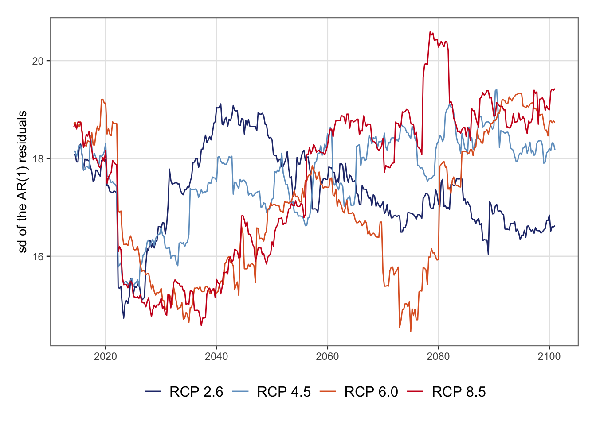

In this page, we estimate the average growth rate of the standard error of quarterly precipitation under different climate scenarios (RCP 2.6, RCP 4.5, RCP 6.0, and RCP 8.5).
According to the IPCC:
A change in the state of the climate that can be identified (e.g., by using statistical tests) by changes in the mean and/or the variability of its properties, and that persists for an extended period, typically decades or longer.
In our DSGE framework (Chapter 9), climate is supposed to be stationary. Our set-up is irrelevant for analyzing changes in mean climate values. However, it allows for changes in the variance of climate.
In the paper, we used monthly precipitation (pr) simulated by the NCAR Community Climate System Model, version 4 (CCSM4) under four different scenarios:
RCP 2.6: strong mitigation (radiative forcing peaks at 2.6~W/m\(^2\)),
RCP 4.5: stabilization without overshoot (4.5~W/m\(^2\)),
Values for soil water deficit were not provided, so we estimated the variance of precipitation instead.
Datasets for historical values (1850–2005) and projected values up to various horizons (we use 2006–2100) can be downloaded from here: https://aims2.llnl.gov/search/cmip5/. The data we use are saved in NetCDF files, and are provided on a monthly basis.
The name of the file is informative. For example: pr_Amon_CCSM4_rcp45_r6i1p1_200601-210012.nc:
pr: The variable is precipitation (kg,m\(^{-2}\),s\(^{-1}\)),
Amon: Atmospheric variable, monthly frequency,
CCSM4: Model: , version 4 (NCAR);
rcp45: Scenario: RCP 4.5,
r6i1p1: Ensemble member: run 6, initialization 1, physics 1,
200601-210012: Time period: Jan. 2006 – Dec. 2100.
Note
The files must be downloaded manually and saved in the data/Weather/Projections folder.
pr_Amon_CCSM4_historical_r1i1p1_185001-200512
Warning
In the paper, we used r1i1p1 files (run 1, initialization 1, physics 1). In 2025, those can be downloaded here, for example:
We define a function, get_netcfd_ccsm() to import the data from an .nc file that contains projected precipitation data.
The get_netcfd_ccsm() function.
#' Compute area-weighted regional means of precipitation from CMIP5 NetCDF files#' #' @description#' This function reads monthly precipitation data (in kg/m2/s) from a CMIP5#' NetCDF file and computes area-weighted averages for each region of a country.#' The results are expressed in millimeters per month.#' #' @param nc_path Path to the NetCDF file containing the precipitation data.#' @param map_country An `sf` object defining the regions of the country.#' @param region_id Name of the column in `map_country` identifying the regions.#' @param start_date Optional. A `Date` object indicating the first date to#' include in the output. If `NULL`, all available dates are kept.#' #' @returns A tibble with the following columns:#' * `region_id`: Region identifier#' * `date`: Date (corresponding to a month, even if given as a Date object).#' * `pr_mean`: Area-weighted mean precipitation (in millimeters).#' get_netcfd_ccsm <-function(nc_path, map_country, region_id,start_date =NULL) { pr <-rast(nc_path)# Extract time dates <- terra::time(pr)if (!is.null(start_date)) { idx <-which(dates >= start_date) pr <- pr[[idx]] dates <- dates[idx]time(pr) <- dates }# Focus on the country of interest# Reproject shapefile to match NetCDF raster CRS if necessary map_country <-st_transform(map_country, crs(pr))# Cropping pr_country <-crop(pr, vect(map_country))# Compute cell areas (used as weights) cell_area <-cellSize(pr_country, unit ="km")# Area-weighted means for each region res_mat <-exact_extract( pr, map_country,fun ="weighted_mean",weights = cell_area,progress =FALSE )# Bind region IDs res_mat <- dplyr::bind_cols( map_country |>st_drop_geometry() |> dplyr::select(!!region_id), res_mat )# Tidy to long format, with datesnames(res_mat)[-1] <-as.character(dates) region_daily_pr <- res_mat |> tidyr::pivot_longer(cols =-!!region_id,names_to ="date",values_to ="pr_mean" ) |> dplyr::mutate(date =as.Date(date)) |># Express in mmmutate(pr_mean = pr_mean *86400*30) |>rename(region_id =!!region_id) region_daily_pr}
Note
If you want to use this function to import another type of variable, you need to change the last operation in the get_netcfd_ccsm() function:
the name of the column should not be "pr_mean",
the values may not be converted in mm.
We use that function to import the data for the historical values and for the projected values under the four RCP scenarios.
7.2 Regional Weights Depending on Agricultural Production
In Chapter 5, we computed regional agricultural intensity for each year between 1987 and 2025. Let us compute the average regional agricultural intensity over the period 1987–2014, as in the paper. The restriction to this period can be changed depending on the sample used.
# A tibble: 18 × 2
region_id weight
<chr> <dbl>
1 Auckland 0.0101
2 Bay of Plenty 0.0254
3 Canterbury 0.0517
4 Gisborne 0.00598
5 Hawke's Bay 0.0213
6 Manawatu-Whanganui 0.0294
7 Marlborough 0.00636
8 New Zealand 0.333
9 Northland 0.0193
10 Otago 0.0206
11 Southland 0.0281
12 Taranaki 0.0283
13 Tasman/Nelson 0.00714
14 Total North Island 0.214
15 Total South Island 0.119
16 Waikato 0.0662
17 Wellington 0.00842
18 West Coast 0.00586
7.3 National Aggregation
We have precipitation values at the month-region level. For each dataset (historical values and RCP scenarios), we perform a quarterly aggregation at the national level, using a function we define, national_quaterly_aggreg(). This functions first performs the national aggregation, by means of a weighted mean, using the regional agrilcultural weights that were just computed (cultures_weights). Then, it sums the national monthly values at the quarter level for each year.
The national_quaterly_aggreg() function.
#' Computes quarterly aggregation at the national level of precipitation.#' #' @param x Tibble with monthly precipitation (see details).#' @param regional_weights Tibble witht the regional weights to use.#' #' @details#' The tibble `x` must contain the following columns:#' * `region_id`: Region identifier.#' * `date`: Date (corresponding to a month, even if given as a Date object).#' * `pr_mean`: Area-weighted mean precipitation (in millimeters).#' The tibble `regional_weights` must contain the following columns:#' * `region_id`: Region identifier.#' * `weight`: The weight to use for national aggregation.#' national_quaterly_aggreg <-function(x, regional_weights) { x |>left_join(regional_weights, by =c("region_id")) |>group_by(date) |>summarise(pr_mean =sum(pr_mean * weight, na.rm =TRUE),.groups ="drop" ) |>mutate(year =year(date),quarter =quarter(date) ) |>group_by(year, quarter) |>summarise(pr_mean =sum(pr_mean, na.rm =TRUE),.groups ="drop" )}
We loop over each of the datasets to apply the national_quaterly_aggreg() function.
We now turn to the estimation of the volatility of the weather shock. Estimating this volatility will be useful to assess the welfare impact of climate change under different climate scenarios.
To estimate the volatility of the weather shock, for each scenario, we use a rolling window of 102 quarters (25.5 years), matching the DSGE sample size (see Chapter 9). Within each window, we fit an AR(1) model, using the sd_resid_ar1() function (defined below): \[
P_\tau = \mu + \phi\,P_{\tau-1} + \varepsilon_\tau,
\] and we store \(\widehat{\sigma}_t = \text{sd}(\widehat{\varepsilon}_\tau)\). The stored values give a time-varying standard deviation of the weather shock.
7.4.1 Helper Functions
We define a few helper functions:
as_quarter_end(): to create a Date object corresponding to the end of a quarter in a given year.
bind_hist_and_rcp(): to build a continuous series for one scenario, binding together historical values and a dataset with projections under a specific scenario.
sd_resid_ar1: to fit an AR(1) model in a window and return the standard deviation of the residuals.
sd_resid_scenario: the core function, which computes the rolling standard deviations of AR(1) residuals for a given scenario.
The as_quarter_end() function.
#' Make a Date at the end of each quarter#' @param y Year (integer).#' @param q Quarter (integer).#' @returns The date at the end of the quarter.#' as_quarter_end <-function(y, q) {# first day of the quarter yq <-yq(paste(y, q))# last day of the quarter (yq %m+%months(3)) -days(1)}
The bind_hist_and_rcp() function.
#' Build a continuous series for one scenario#' #' @description#' concatenates Historical data (up to 2005Q4) and data from a scenario (from #' 2006Q1).#' #' @param hist_tb Tibble with precipitation data for the historical period.#' @param rcp_tb Tibble with precipitation data for a scenario.bind_hist_and_rcp <-function(hist_tb, rcp_tb) {bind_rows( hist_tb, rcp_tb ) |>arrange(year, quarter) |>mutate(date =as_quarter_end(year, quarter))}
The sd_resid_ar1() function.
#' Fit AR(1) in a window and return sd of residuals#' #' @param x Series with quarterly precipitation.#' #' @returns Returns the standard deviation of the residuals of the AR(1), or #' `NA` if the number of observation is lower than 102 (window smaller than #' that used in the DSGE model).sd_resid_ar1 <-function(x) {if (length(x) <102) {return(NA) } else { fit <- stats::arima(x, order =c(1, 0, 0), include.mean =TRUE) sd_resid <- stats::sd(stats::residuals(fit), na.rm =TRUE)return(sd_resid) }}
The sd_resid_scenario() function.
#' Compute rolling standard deviations of AR(1) residuals for scenario scaling#' #' @description#' This function computes the time-varying volatility of precipitation by#' estimating, within each rolling window, an AR(1) model and extracting the #' standard deviation of its residuals. We will use the resulting series to#' derive scenario multipliers (RCP-based scaling factors) for weather shock #' variances.#'#' @param tb A tibble (ordered by increasing dates) with precipitation for #' historical values and projected values under a climate scenario. The tibble #' must contain at least the following column:#' * `pr_mean`: precipitation values.#' @param reg_start#' @param reg_end#' #' @return The initial tibble with an addition column:#' * `sd_ar1`: the rolling-window standard deviation of AR(1) residuals.#' sd_resid_scenario <-function(tb) {# rolling window std of AR(1) residuals (window size = 102 quarters)# This size corresponds to the size of our sample in the DSGE model. roll_sd <-slide(.x = tb$pr_mean, .f =~sd_resid_ar1(.x), .before =102, .complete =FALSE# we return NAs if incomplete ) tb |>mutate(sd_ar1 =unlist(roll_sd)) |>filter(!is.na(sd_ar1))}
7.4.2 Rolling Windows
We compute the standard deviations of the AR(1) residuals on a rolling window of 25.5 years for each scenario (which corresponds to the length of the sample fed in the DSGE model (see Chapter 9). We loop over all the RCP scenarios (all the dataset except the dataset with historical values) and apply the sd_resid_scenario() function.
p <-ggplot(data =list_rbind(tb_sd_scenarios, names_to ="scenario") |>filter(year >=2014),mapping =aes(x = date, y = sd_ar1, colour = scenario)) +geom_line() +scale_colour_manual(NULL, values = colour_scenarios) +labs(x =NULL, y ="sd of the AR(1) residuals") +theme_paper()p
Figure 7.1: Visualization of the estimates sd of the residuals computed on the rolling windows

7.4.3 Growth Rate of the Standard Deviation
For each scenario, we estimate a log–linear trend in the rolling standard deviations: \[
\ln(\widehat{\sigma}_t) = \alpha + \beta t + u_t,
\] where \(\beta\) gives theinstantaneous quarterly growth rate of the volatility of precipitation shocks.
This translates to long-run growth rates: \[
\sigma_{i,\eta^W} = e^{\beta} - 1.
\]
The average growth over 1989–2100 can then be computed: \[
\overline{\Delta \sigma_{i,\eta^W}} = (1+\sigma_{i,\eta^W})^{q} - 1,
\quad q = 347
\]
We define the function compute_growth_stats() to compute the instantaneous and the long-run growth rates.
#' Compute instantaneous, compound, and total growth rates of rolling residual #' volatility#'#' @description#' This function summarizes the time trend in the rolling standard deviations #' of AR(1) residuals from the precipitation data under a scenario. #' It estimates how the volatility of the underlying process evolves over time #' by regressing the (log of) fitted standard deviations on time.#'#' @param tb_sd A tibble containing the estimated rolling standard deviations #' of residuals from AR(1) models (as produced by `sd_resid_scenario()`). It #' must include the following columns:#' * `year`: Calendar year.#' * `sd_ar1`: Standard deviation of AR(1) residuals.#' #' @returns A tibble with three summary statistics:#' * `instant_growth`: Estimated instantaneous quarterly growth rate of #' volatility (log-linear).#' * `compound_growth`: Equivalent compound quarterly growth rate, computed #' as \eqn{e^{r} - 1}.#' * `tot_growth`: Total cumulative growth (%) over the entire sample period #' since 2014.#' compute_growth_stats <-function(tb_sd) { tb_sd <- tb_sd |>filter(year >=2014) |>mutate(t =row_number()) q_total <-nrow(tb_sd)# regress ln(sd) on time fit <-lm(sd_ar1 ~ t, data = tb_sd) tb_sd$fitted <-fitted(fit) instant_growth <-coef(lm(log(fitted)~1+ t, data = tb_sd))[2]# Equivalently compound_growth <-exp(instant_growth) -1 tot_growth <- ((1+ compound_growth)^q_total -1) *100tibble(instant_growth = instant_growth,compound_growth = compound_growth,tot_growth = tot_growth )}
We use the compute_growth_stats() to estimate the quarterly rate of growth of the standard deviation of the weather measure and the corresponding average growth rate over the whole 1989–2100 period: